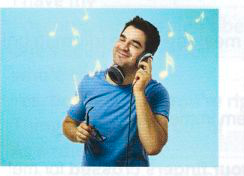
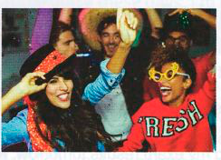
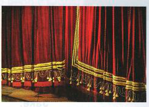
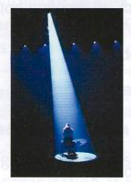
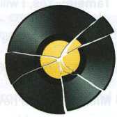

Exercises
46.1 Which idioms do these pictures make you think of?
1

2

3

4

5

46.2 Complete these sentences with an idiom from A opposite.
- The bedroom looks a bit dull; maybe we could .............................. with some colourful wallpaper.
- Katy didn't want to work at the market at first, but she soon .............................. when she realised there would be free food.
- The ideas are good, but you may need to spend a little bit more time .............................. all the details.
- The news that the government had decided to lower property taxes was .............................. .
46.3 Match each idiom on the left with the situation in which it could be used on the right.
1
make a song and dance about something
a
When you approve of something, or are interested in it because it affects you.
2
sing your heart out
b
When something is finished.
3
sound like a broken record
c
When someone gets very excited or annoyed over a small issue.
4
strike a chord
d
When someone should continue despite problems.
5
the curtain has fallen on
e
When someone always talks about the same thing.
6
the show must go on
f
When someone sings with a lot of emotion.
46.4 Use idioms from B opposite to rewrite the underlined parts of the sentences.
- My daughter started crying on the bus. She really embarrassed me and herself.
- After the latest scandal, the new Prime Minister is constantly on TV and in newspapers.
- After her successful film career finished, she decided to start teaching drama at university.
- We hope that this new timetable will prepare everyone for a positive start to the school year!